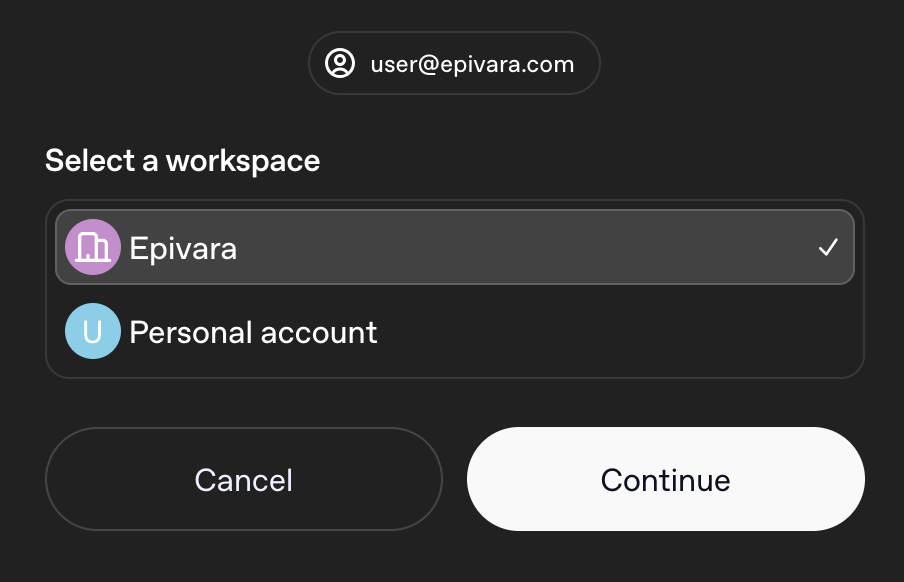

Desktop App
Everything in this guide so far works in your browser. For some, the web app provides all the functions they'll ever need. For those who want to go further, there's the desktop app.
The desktop app is actively in development. Features and layouts are constantly changing, so parts of this guide may not look familiar. That said, the core workflow should be the same.
Known limitations:
- Projects don't sync between the web and desktop app at the moment.
- Workspace agents are a web app exclusive, at the moment they are not accessible in the desktop app.
- Chats can't be deleted directly in the app. To delete a chat, Archive it, then delete it from Settings → Archived chats.
- Sites is available on the desktop but hidden on the web.
Installation
Download the app from chatgpt.com/download. In the app, sign in with your business account.

Make sure to select the company workspace for access to Business features.
What it offers
The desktop app is largely the same as the web app, offering Chat, Work, plugins, and the like. However, the app also adds local file access and a few desktop-only tools that can change how you work.
The main reason you'd want the desktop app is the local file access. ChatGPT on the web can only work on the files you've uploaded, and uploading many files can be a tedious task. With the desktop app, ChatGPT can directly access and work on the files on your computer, cutting out the tedium.
The app also offers Codex, which is essentially the same thing as Work mode, except it is optimized for software development. You can change between ChatGPT and Codex in the top left.
Note that ChatGPT can only access your local files in Work or Codex mode, not Chat!
Try it yourself
No need to upload files or attach a folder manually. In a Work or Codex chat, ask:
“Search the files you can access on my computer for [a rough description here]. Tell me what you find and where it is.”
Expected outcome: it runs searches across your computer, finds a file/folder, and reports back.
Desktop-only features
Some other notable desktop-only features are covered on separate pages:
Platform exclusive chats
Work chats started on the desktop app have access to computer files. Meanwhile, Work chats started on the web app do not.
ChatGPT keeps these separate intentionally. If you start a Work chat in the web app, you will be unable to continue the conversation on the desktop app, though you will be able to read it.
Meanwhile, Work chats started in the desktop app will not be accessible at all in the web app. Codex is exclusive to the desktop app, so the same applies.